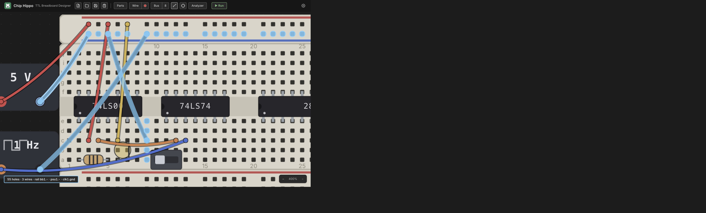

Probing & Net Names
Once a circuit is wired up, the probe is how you ask "what's this actually connected to?" — click any hole, pin, or terminal and Chip Hippo highlights every other point that shares the same electrical net, live, without needing to trace wires with your eyes. This page covers arming the probe, reading its net summary, naming a net so it reads clearly everywhere in the app, dropping free-text annotations on the desk, and sending a net to the logic analyzer.

The probe tool
Press I or P (either key toggles it — no modifier), or click Probe in
the toolbar. With the probe armed:
- Hover a hole, rail point, PSU/clock terminal, chip pin, or a wire and its whole net lights up — a transient highlight that follows your cursor.
- Click a point to pin the highlight so it stays put while you move the cursor elsewhere (handy for comparing it against a second net). Click the pinned point again to unpin it.
Escunpins first, then a secondEscdisarms the tool;Mdisarms whichever of the wire, bus, or probe tool is currently armed.
Unlike the wire, bus, and placement tools, the probe stays available while a simulation is running — editing locks on Run, but you can keep probing the live circuit the whole time. See Running a Simulation for what Run/Stop locks and what stays live.
Reading the net summary
A highlighted net draws as a glow: dots on member holes and terminals, rings around member chip pins, and a glow stroke along every member wire — brighter when pinned. Below it, a status readout summarizes the same net in one line, for example:
VCC · H · 23 holes · 3 chip pins · 2 wires · rail bb1.t+ · psu1.+
The pieces, in order, appear only when relevant:
- The net's name, if you've given it one (see below).
- Its current level (
H/L/Z/X) while a simulation is running — gone when stopped, since an unpowered net has no level to report. - A connectivity summary — hole/pin/wire counts, which rails it touches, and any PSU/clock terminals it reaches.
Under the hood, every hole, rail node, wire, active switch/button bridge, and component pin gets partitioned into these nets by a union-find pass over the whole document — the same netlist the simulator resolves each net's level from.
Naming a net
A net's default identity is just its smallest member address (bb1.a12, say)
— useful internally, meaningless at a glance. Right-click a point while
probing to give the net a real name:
- Name this net… (or Rename net… if it already has one) opens a prompt with quick picks for VCC, GND, and CLK, or type anything you like.
- Clear name removes it.
The name binds to the specific point you right-clicked, but resolves to whatever net that point sits on at any given moment — so it survives rewiring around it. If an edit later merges two separately-named nets into one, one name wins deterministically and the other is dropped; nothing crashes, but it's worth a glance if a net you named seems to have picked up its neighbor's label instead.
Naming isn't just cosmetic: a named net is what makes the Schematic
View and the Build Guide, Wiring List &
BOM readable — VCC/GND/CLK and your own signal names
carry through instead of raw hole addresses.
Annotations
For notes that aren't about a net at all — reminders, section headers, "TODO: add a pull-up here" — drop a free-text annotation on the desk from the Annotations section at the bottom of the parts palette:
- Label — a short one-line caption.
- Note — a multi-line block.
Picking one arms a placement ghost like a part; click anywhere on the desk to drop it, which opens an inline editor immediately so you can type right away. Drop it on top of a part and it anchors to that part — the ghost shows the anchored state before you click — so the annotation rides along whenever that part moves. Drop it on open desk and it just sits at that world position.
Double-click an annotation any time to re-edit its text (Enter commits a
label; a note keeps Enter for newlines, so use ⌘Enter/Ctrl+Enter to
commit). Drag its body to reposition it, and right-click for Edit /
Remove. Annotations are pure decoration — they carry no electrical
meaning and are invisible to the netlist, occupancy, and the simulator.
Sending a net to the analyzer
Probing a net you want to watch over time? Right-click it and choose Add to analyzer to pin it as a channel without leaving the probe tool. See Logic Analyzer & Timing for capturing and reading the resulting waveform.
See also
- Wiring, Nets & Buses — laying the wires and buses whose nets you're probing.
- Running a Simulation — what a net's level means and when the probe keeps working while editing locks.
- Logic Analyzer & Timing — capturing a probed net's waveform over time.
- Schematic View — where net names show up in the derived logical diagram.